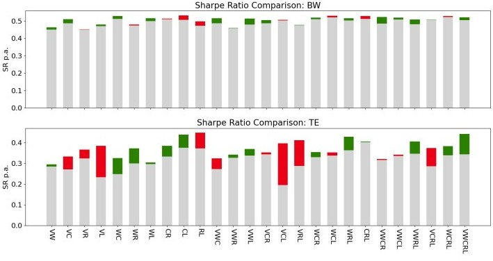
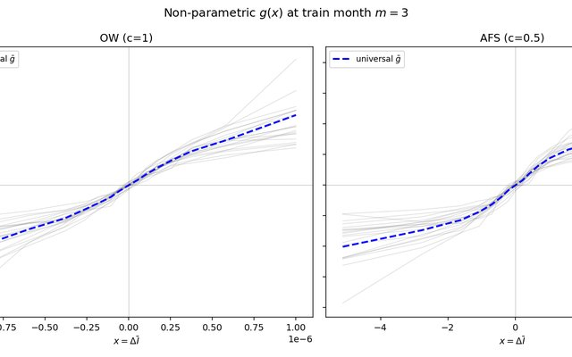
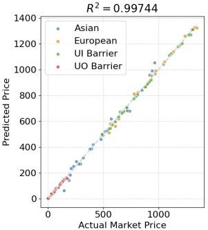
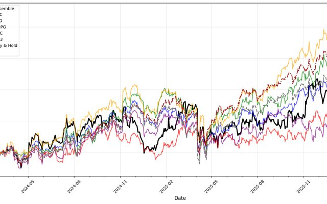
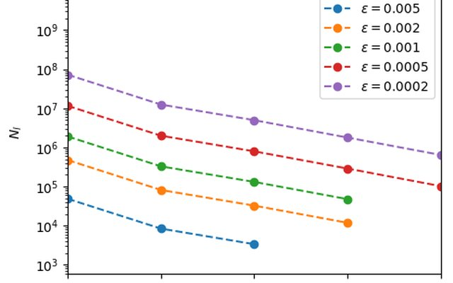
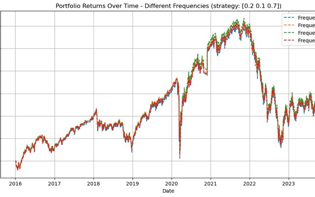
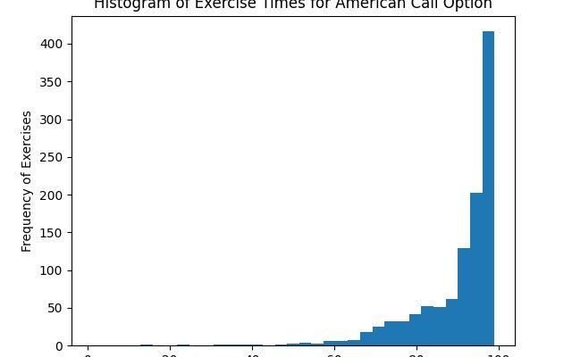

Christopher Laloi Dybdahl
I hold an MSc in Mathematics and Finance from Imperial College London, which I attended as an Aker Scholar, and a five-year integrated MSc in Computer Science and Financial Engineering from NTNU, with exchange terms at Harvard University and EPFL.
I have worked as a Quantitative Research Intern at Squarepoint Capital (Macro, London) and as a Power Trading Intern at Statkraft. My research interests are stochastic control, statistical methods in finance, and machine learning for markets.
Research
Deep Stochastic Control for Optimal Trade Execution in Intraday Electricity Markets
MSc thesis, NTNU, 2025 (grade A) · with Alexander Dybdahl and Syver Nes · an extension is under double-blind review at Management Science
A physics-informed deep BSDE solver for the non-smooth HJB equations arising in optimal execution under renewable forecast uncertainty, bid–ask spread, and price impact. The learned policy recovers the known analytical solution in the frictionless limit and outperforms TWAP and the analytical benchmark on German intraday market data calibrated from EPEX SPOT trades.
MSc thesis, Imperial College London, 2026
How much Sharpe ratio does a systematic book give up when signal combination is constrained by the investment process and by estimation error? With standardised signals the transfer coefficient prices any combination rule exactly; an exact two-factor decomposition separates the cost of aggregation structure from the cost of weights, and estimated rules are evaluated as decision rules over an explicit prior on populations.
Risk Forecasting of Electricity Futures: A Comparative Study of VaR and ES Models on German Power
Specialization project, NTNU, 2024 (grade A) · with Syver Nes
Thirty-one joint VaR–Expected Shortfall forecasting models — filtered historical simulation, GARCH-type, EVT, GAS, and CAViaR families — evaluated on eight EEX German power futures with the modern backtesting battery (unconditional and conditional coverage, dynamic quantile, ESR) and the Model Confidence Set.
Projects

Mixed versus Integrated Multifactor Portfolios
26 combinations of five equity factors under four construction rules — including tracking-error QCQP with Ledoit–Wolf shrinkage — on 980k CRSP/Compustat firm-months, 1963–2024. Integrated portfolios look better pointwise, but no Sharpe difference survives Romano–Wolf multiple-testing correction at equal active risk.
Imperial College London · with J. Fhima and C. Mnif

Optimal Make–Take Contracts via Deep HJB Solvers
Principal–agent incentive design between an exchange and a market maker quoting in lit and dark pools (Baldacci et al., 2019). The market maker's best response is a neural Hamiltonian maximiser; the exchange's HJB equation is solved by a backward actor–critic sweep with a Heun predictor–corrector.
Imperial College London · with T. Delforge and J. Jareño García

Price Impact and Optimal Execution
An end-to-end impact research pipeline on US equities at 10-second resolution: Obizhaeva–Wang and AFS propagator fitting, a non-parametric binned impact estimator with cross-stock shrinkage, a Waelbroeck backtest simulator with a multi-day impact-carry engine, and optimal execution against synthetic alphas — including misspecification experiments.
Imperial College London · with A. Nageleisen and A. Severac

Model-Free Exotic Pricing with Implied Expected Signatures
Exotic payoffs as linear functionals of level-5 lead-lag path signatures. An implied expected signature is calibrated from liquid contracts, then prices held-out Asians and barriers with out-of-sample R² ≈ 0.99 under GBM, jump-diffusion and rough volatility — degrading to ≈ 0.90 on real SPX data.
Imperial College London · with A. Nageleisen, Y. Mendi and L. Würker

Dynamic Reinforced Ensemble for Stock Trading
Replication and extension of DREB (ICAIF 2024) in FinRL: five deep RL agents (A2C, DDPG, TD3, SAC, PPO) combined with time-varying expert-tracking weights, tuned by Bayesian optimisation on validation Sharpe. Out-of-sample on the DJIA 2024–26, the ensemble improves Sharpe over the index (1.04 vs 0.89) and the FinRL dynamic ensemble (0.88), with a Calmar ratio of 1.40 and a smaller drawdown than buy-and-hold.
Imperial College London · group project

Multilevel Monte Carlo and Smoothed Greeks for Barrier Options
Reproduction of Giles (2008): multilevel Monte Carlo with Euler coupling, optimal sample allocation across levels and refinement-factor sweeps, cutting the cost of an ε-accurate price from O(ε⁻³) towards O(ε⁻²). For down-and-out barriers, the discontinuous survival indicator is replaced by a Brownian-bridge crossing probability, restoring pathwise differentiability for unbiased Greeks.
Imperial College London · with R. Delforge, A. Jareño García and M. Marques de Almeida

Black–Litterman Rebalancing under Transaction Costs
When should a multi-asset portfolio rebalance? Calendar and threshold-band policies with Black–Litterman views triggered by index moves, evaluated under 10 bp transaction costs across equities, fixed income, REITs, high yield and commodities — built for a Fidelity-sponsored project in MIT 15.433.
MIT Sloan · group project

American Option Pricing by Least-Squares Monte Carlo
Longstaff–Schwartz pricing with eight regression bases and antithetic variates, cross-checked against binomial trees with discrete dividends; maps how the early-exercise boundary and exercise frequency move across volatility regimes.
NTNU · with Alexander Dybdahl
Experience
-
Quantitative Research Intern, Macro — Squarepoint Capital (London, 2026; return offer)
Analysed time-series properties and PnL of alphas on bond, equity index, and FX futures under execution constraints; researched and implemented alpha signal combination on shared asset universes, deployed to production. -
Power Trading Intern, UK Intraday — Statkraft Trading (Düsseldorf, 2025)
Estimated realised volatility from high-frequency trade data and analysed order books to study net volume pressure; deployed a volatility forecasting model and built a signal integrated into algorithmic and discretionary trading. -
Deep Learning Data Scientist — ReLU Machine Learning Club, NTNU (2024–2025)
Built and deployed a VAE on time-series data to detect electricity-consumption anomalies for a real-estate client. -
Project Extreme Energy Events — CERN
Participated in the construction and installation of muon detectors in an international research collaboration, with responsibility for the northernmost installation site.
Skills
Languages: Python (incl. GPU parallelisation), C++, R, Java, Bash · Libraries: PyTorch, TensorFlow, JAX, scikit-learn, NumPy, pandas, SciPy · Infrastructure: Slurm/HPC, Linux, Git, conda, Poetry · Spoken: Norwegian (native), English, French, German